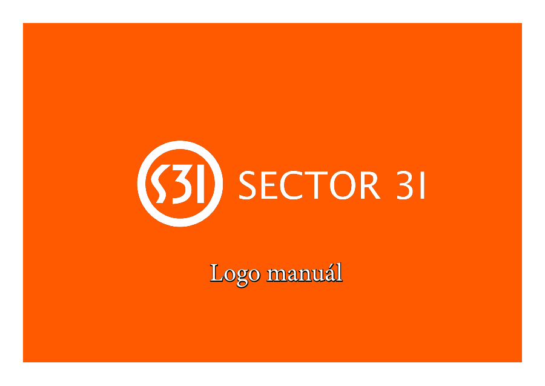
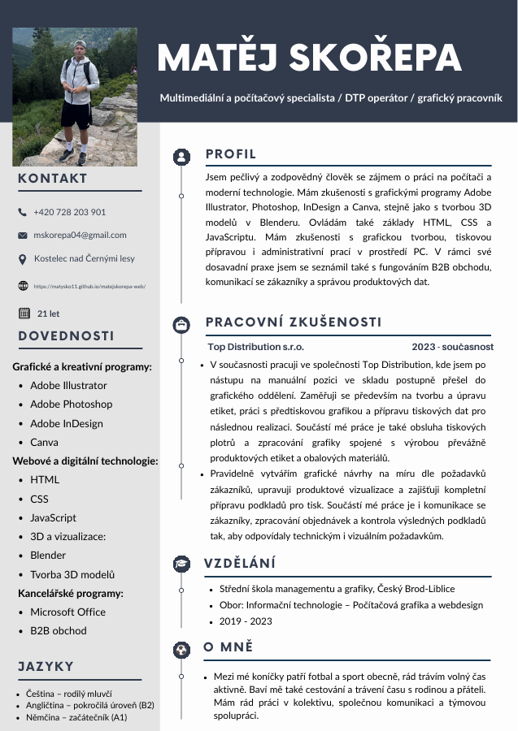
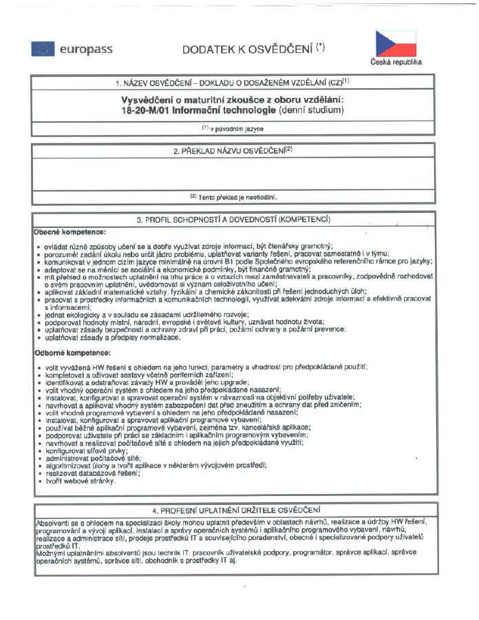

Top Distribution s.r.o.
Tvorba etiket, úprava grafiky, předtisková příprava, obalové materiály, produktové vizualizace a komunikace se zákazníky.
Načítám portfolio
Portfolio 2026
Jsem multimediální a počítačový specialista se zaměřením na grafiku, předtiskovou přípravu, etikety, obalový design, produktové vizualizace a webové technologie.
Profil
Pracuji s grafikou, tiskovou přípravou a produktovými daty. Baví mě práce, kde se potkává vizuální cit, přesnost a konkrétní výsledek, který má fungovat v tisku, na e-shopu i v prezentaci značky.
Mám rád práci s lidmi, komunikaci se zákazníky a projekty, kde se propojuje obchod, marketing, moderní technologie a chuť posouvat se dál.
Ve společnosti Top Distribution jsem se postupně posunul do grafického oddělení, kde tvořím a upravuji etikety, připravuji tisková data, pracuji s plotry a komunikuji se zákazníky nad výslednými podklady.
Tvorba etiket, úprava grafiky, předtisková příprava, obalové materiály, produktové vizualizace a komunikace se zákazníky.
Informační technologie - počítačová grafika a webdesign.
Dovednosti
Návrhy etiket, obalů, produktových materiálů a vizuálních výstupů pro prezentaci značky.
Příprava dat pro tisk, kontrola rozměrů, barevnosti a technických požadavků před realizací.
Základy modelování v Blenderu a vizuální prezentace produktů pro e-shop nebo portfolio.
HTML, CSS a JavaScript pro moderní prezentační weby, galerie a interaktivní prvky.
Portfolio
Návrh vizuálního výstupu s důrazem na čistotu, čitelnost a přípravu pro tisk.
Grafické zpracování produktového materiálu s profesionálním prezentačním dojmem.
Příprava podkladů tak, aby výsledek odpovídal technickým i vizuálním požadavkům.
Rozsáhlý školní projekt zaměřený na modelování budovy školy, interiéru a prezentačních vizualizací.
Vizualizace a kompozice pro atraktivnější prezentaci výrobku v digitálním prostředí.
Grafika napojená na výrobu, kontrolu dat a praktickou práci s tiskovou technologií.

Kompletní vizuální systém: základní logo, ochranná zóna, použití na podkladech, vizitka, obálka a merchandising.
Dokumenty

Profil, praxe, vzdělání, dovednosti a kontaktní údaje.

Doklad k absolvovanému vzdělání a odbornému zaměření.
Stručné představení zaměření, motivace a pracovního přístupu.
Dokumentace projektu 3D modelu školy s vizualizacemi a postupem tvorby.
Projektové video je přiložené jako soubor ke stažení.
Kontakt
Rád se zapojím do projektu, kde je potřeba přesná práce s grafikou, tiskem, produktovou prezentací nebo moderním prezentačním webem.
Jestli vás napadlo, zda mi s textem pomohla umělá inteligence, tak ano. Beru ji jako moderní nástroj. Myšlenky, zkušenosti a odhodlání jsou ale moje vlastní - pod webem se nepodepisuje AI, ale Matěj Skořepa.